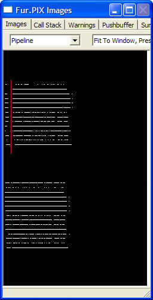

This view shows how various primitives work their way through the pipeline as they are processed by the GPU. It provides a useful way to determine if the pipeline is getting flushed between primitives due to a particular render state that is being set.

This view shows a sampling profile of the current primitive, and the preceding one, as they make their way through the various stages of the GPU hardware pipeline. PIX can sample the GPU's status register at the rate of approximately once every 220 GPU cycles. The pipeline view shows each sample as a one-pixel column, where each pipeline is represented as one of 16 pixel rows. A pipeline stage will appear to be busy if it is waiting on a later stage, even if it is currently idle. For example, if the pixel shader is running slow because it's rasterizing some large triangles, and the vertex shader is running so far ahead that it has filled up the internal buffer between the pipelines, the vertex shader will still appear to be busy. However, a pipeline stage is not shown as busy if it is waiting on an earlier stage, as might more intuitively be expected.
How fast the GPU can process a state change really depends on the state change involved, the previous primitive, and the current primitive. For example, if the GPU back-end is busy with a previous primitive but the front-end is not, there may be no effective impact from a state change that affects only the front-end. To help you understand how state changes affect the GPU, the pipeline view shows a profile of the previous primitive profiled in isolation in the upper-left corner of the display, with a similar profile of the current primitive immediately to the right, separated by a red bar. Then, immediately underneath, the pipeline view shows the results of the two primitives profiled consecutively, including any state changes that are done between the two. If there is a state change that forces the GPU's back-end to go idle between the two primitives, that will show as a vertical gap on the lower profile, directly underneath the red bar of the upper two profiles. If there is no state change that forces the GPU's back-end to go idle, there will be no gap, and the two primitives will flow smoothly together. SetFence is an example of a state change that forces the GPU's back-end to go idle.